11 Redes neuronales
11.1 Introducción a redes neuronales
En partes anteriores, vimos cómo hacer más flexibles los métodos de regresión: la idea es construir entradas derivadas a partir de las variables originales, e incluirlas en el modelo de regresión. Este enfoque es bueno cuando tenemos relativamente pocas variables originales de entrada, y tenemos una idea de qué variables derivadas es buena idea incluir (por ejemplo, splines para una variable como edad, interacciones para variables importantes, etc). Sin embargo, si hay una gran cantidad de entradas, esta técnica puede ser prohibitiva en términos de cálculo y trabajo manual.
Por ejemplo, si tenemos unas 100 entradas numéricas, al crear todas las interacciones \(x_i x_j\) y los cuadrados \(x_i^2\) terminamos con unas 5150 variables. Para el problema de dígitos (256 entradas o pixeles) terminaríamos con unas 32 mil entradas adicionales. Aún cuando es posible regularizar, en estos casos suena más conveniente construir entradas derivadas a partir de los datos.
Para hacer esto, consideramos entradas \(X_1, . . . , X_p\), y supongamos que tenemos un problema de clasificación binaria, con \(G = 1\) o \(G = 0\). Aunque hay muchas maneras de construir entradas derivadas, una manera simple sería construir \(m\) nuevas entradas mediante:
\[a_k = h \left ( \theta_{k,0} + \sum_{j=1}^p \theta_{k,j}x_j \right)\]
para \(k=1,\ldots, m\), donde \(h\) es la función logística, y las \(\theta\) son parámetros que seleccionaremos más tarde. La idea es hacer combinaciones lineales de variables transformadas.
Modelamos ahora la probabilidad de clase 1 con regresión logística, pero en lugar de usar las entradas originales X usamos las entradas derivadas \(a_1, . . . , a_m\): $$p_1(x) = h ( 0 + {j=1}^m _ja_j
)$$
Podemos representar este esquema con una red dirigida (\(m=3\) variables derivadas):
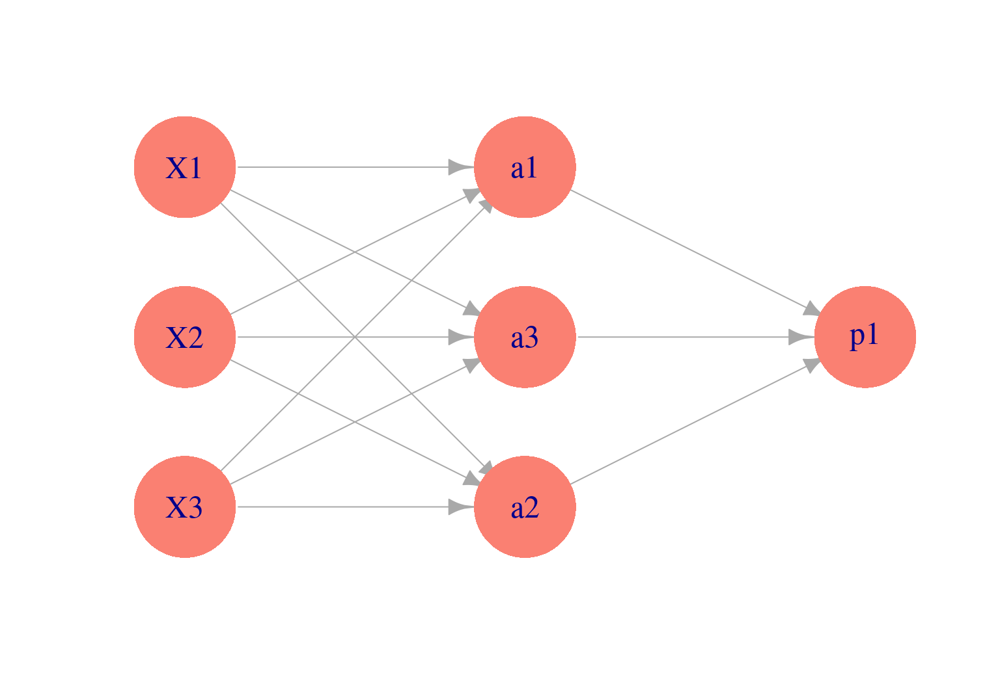
Observaciones:
- ¿Por qué usar \(h\) para las entradas derivadas \(a_k\)? En primer lugar, nótese que si no transformamos con alguna función no lineal \(h\), el modelo final \(p_1\) para la probabilidad condicional es el mismo que el de regresión logística (combinaciones lineales de combinaciones lineales son combinaciones lineales). Sin embargo, al transformar con \(h\), las \(x_j\) contribuyen de manera no lineal a las entradas derivadas.
- Las variables \(a_k\) que se pueden obtener son similares (para una variable de entrada) a los I-splines que vimos en la parte anterior.
- Es posible demostrar que si se crean suficientes entradas derivadas (\(m\) es suficientemente grande), entonces la función \(p_1(x)\) puede aproximar cualquier función continua. La función \(h\) (que se llama función de activación no es especial: funciones continuas con forma similar a la sigmoide (logística) pueden usarse también (por ejemplo, arcotangente, o lineal rectificada). La idea es que cualquier función se puede aproximar mediante superposición de funciones tipo sigmoide (ver por ejemplo Cybenko 1989, Approximation by Superpositions of a Sigmoidal Function).
¿Cómo construyen entradas las redes neuronales?
Comencemos por un ejemplo simple de clasificación binaria con una sola entrada \(x\). Supondremos que el modelo verdadero está dado por:
h <- function(x){
1/(1 + exp(-x)) # es lo mismo que exp(x)/(1 + exp(x))
}
x <- seq(-2, 2, 0.1)
p <- h(2 - 3 * x^2) #probabilidad condicional de clase 1 (vs. 0)
set.seed(2805721)
x_1 <- runif(30, -2, 2)
g_1 <- rbinom(30, 1, h(2 - 3 * x_1^2))
datos <- data.frame(x_1, g_1)
dat_p <- data.frame(x, p)
g <- qplot(x, p, geom='line', colour="red")
g + geom_point(data = datos, aes(x = x_1, y = g_1), colour = 'red')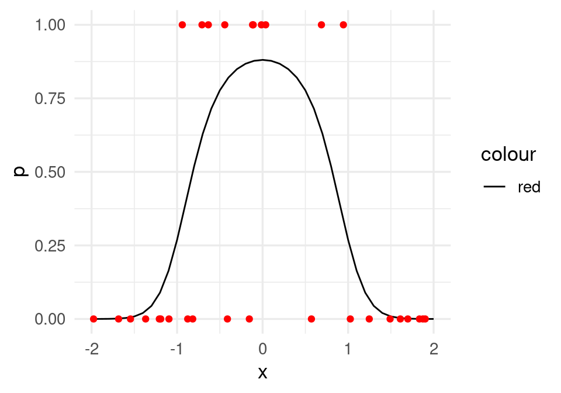
donde adicionalmente graficamos 30 datos simulados. Recordamos que queremos ajustar la curva roja, que da la probabilidad condicional de clase. Podríamos ajustar un modelo de regresión logística expandiendo manualmente el espacio de entradas agregando \(x^2\), y obtendríamos un ajuste razonable. Pero la idea aquí es que podemos crear entradas derivadas de forma automática.
Supongamos entonces que pensamos crear dos entradas \(a_1\) y \(a_2\), funciones de \(x_1\), y luego predecir \(g.1\), la clase, en función de estas dos entradas. Por ejemplo, podríamos tomar:
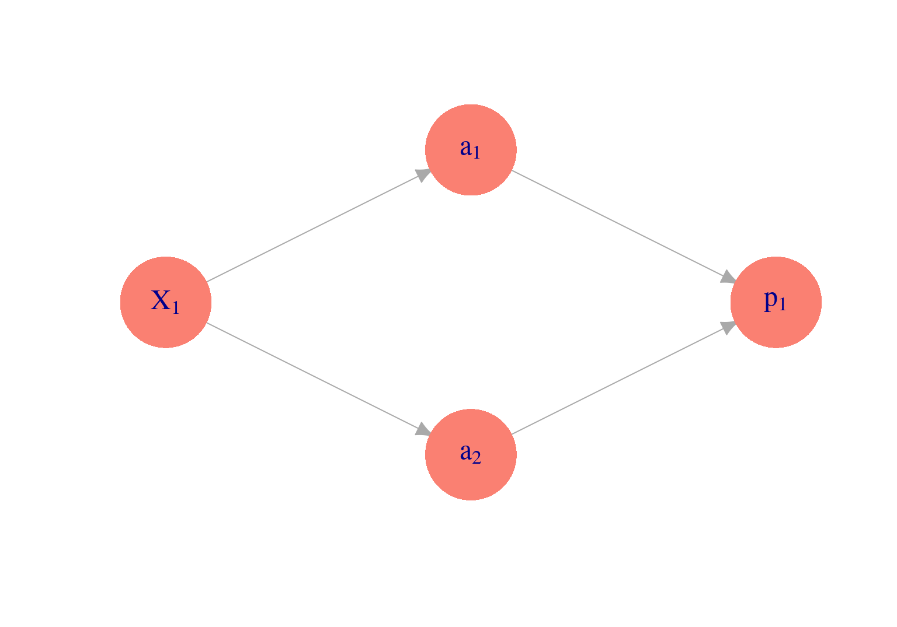
donde hacemos una regresión logística para predecir \(G\) mediante
\[p_1(a) = h(\beta_0 + \beta_1a_1+\beta_2 a_2),\]
\(a_1\) y \(a_2\) están dadas por
\[a_1(x)=h(\beta_{1,0} + \beta_{1,1} x_1),\]
\[a_2(x)=h(\beta_{2,0} + \beta_{2,1} x_1).\]
Por ejemplo, podríamos tomar
a_1 <- h( 1 + 2 * x) # 2(x+1/2)
a_2 <- h(-1 + 2 * x) # 2(x-1/2) # una es una versión desplazada de otra.Las funciones \(a_1\) y \(a_2\) dependen de \(x\) de la siguiente forma:
dat_a <- tibble(x = x, a_1 = a_1, a_2 = a_2)
dat_a_2 <- dat_a |> gather(variable, valor, a_1:a_2)
ggplot(dat_a_2, aes(x=x, y=valor, colour=variable, group=variable)) + geom_line()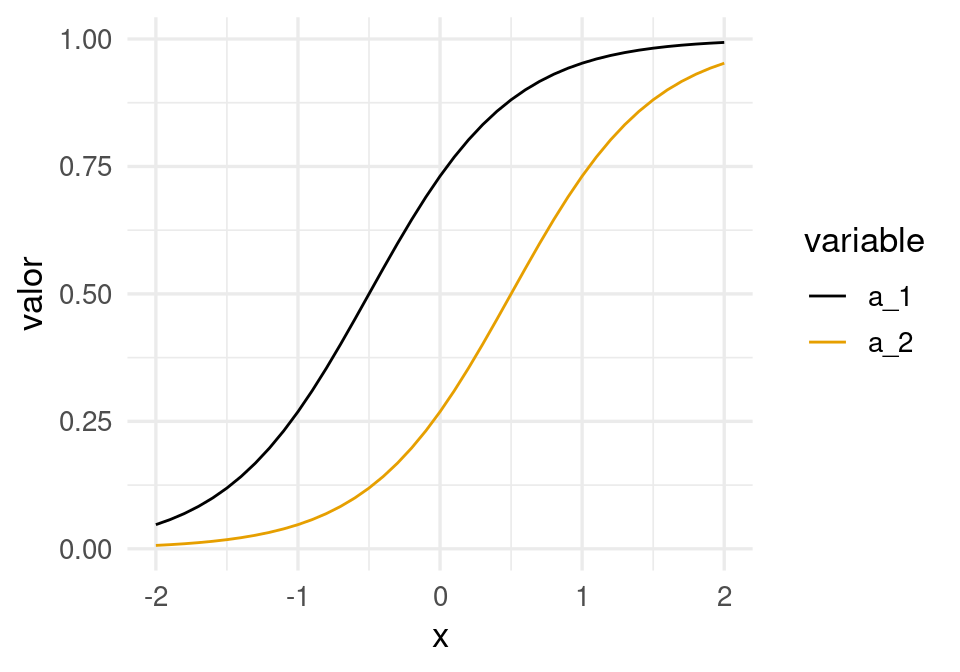
Si las escalamos y sumamos, obtenemos
dat_a <- data.frame(x=x, a_1 = -4 + 12 * a_1, a_2 = -12 * a_2, suma = -4 + 12 * a_1 - 12 * a_2)
dat_a_2 <- dat_a |> gather(variable, valor, a_1:suma)
ggplot(dat_a_2, aes(x = x, y = valor, colour = variable, group = variable)) + geom_line()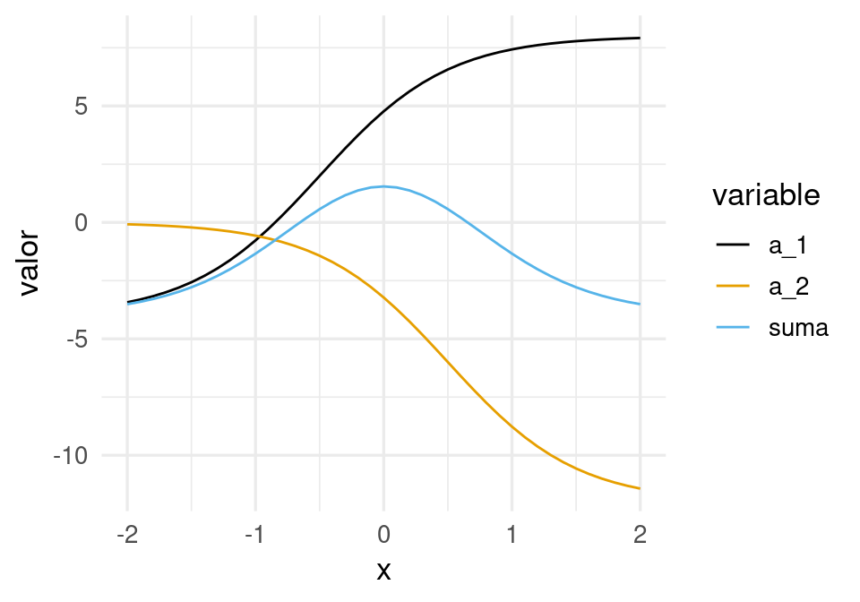
y finalmente, aplicando \(h\):
dat_2 <- data.frame(x, p2 = h(-4 + 12 * a_1 - 12 * a_2))
ggplot(dat_2, aes(x=x, y=p2)) + geom_line()+
geom_line(data=dat_p, aes(x=x,y=p), col='red') +ylim(c(0,1))+
geom_point(data = datos, aes(x = x_1, y = g_1))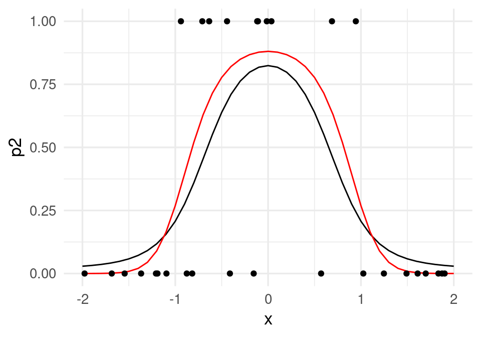
que da un ajuste razonable. Este es un ejemplo de cómo la mezcla de dos funciones logísticas puede replicar esta función con forma de chipote.
¿Cómo ajustar los parámetros?
Para encontrar los mejores parámetros, minimizamos la devianza sobre los parámetros \(\beta_0,\beta_1,\beta_2\) y \(\beta_{1,0},\beta_{1,1},\beta_{2,0},\beta_{2,1}\).
Veremos más adelante que conviene hacer esto usando descenso o en gradiente o descenso en gradiente estocástico, pero por el momento usamos la función optim de R para minimizar la devianza. En primer lugar, creamos una función que para todas las entradas calcula los valores de salida. En esta función hacemos feed-forward de las entradas a través de la red para calcular la salida.
## esta función calcula los valores de cada nodo en toda la red,
## para cada entrada
feed_fow <- function(beta, x){
a_1 <- h(beta[1] + beta[2] * x) # calcula variable 1 de capa oculta
a_2 <- h(beta[3] + beta[4] * x) # calcula variable 2 de capa oculta
p <- h(beta[5] + beta[6] * a_1 + beta[7] * a_2) # calcula capa de salida
p
}Nótese que simplemente seguimos el diagrama mostrado arriba para hacer los cálculos, combinando linealmente las entradas en cada capa.
Ahora definimos una función para calcular la devianza. Conviene crear una función que crea funciones, para obtener una función que sólo se evalúa en los parámetros para cada conjunto de datos de entrenamiento fijos:
perdida_log_fun <- function(x, y){
# esta función es una fábrica de funciones
perdida_log <- function(beta){
p <- feed_fow(beta, x)
- 2 * mean(y*log(p) + (1-y)*log(1-p))
}
perdida_log
}Por ejemplo:
perdida_log <- perdida_log_fun(x_1, g_1) # crea función
## ahora dev toma solamente los 7 parámetros beta:
perdida_log(c(0,0,0,0,0,0,0))[1] 1.386294Finalmente, optimizamos la devianza. Para esto usaremos la función optim de R:
set.seed(5)
salida <- optim(rnorm(7), perdida_log, method = 'BFGS') # inicializar al azar punto inicial
beta <- salida$par
beta[1] -24.8192588 23.0201189 -8.4364868 -6.7633493 0.9849461 -14.0157663
[7] -14.3394678Y ahora podemos graficar con el vector \(\beta\) encontrado:
## hacer feed forward con beta encontrados
p_2 <- feed_fow(beta, x)
dat_2 <- data.frame(x, p_2 = p_2)
ggplot(dat_2, aes(x = x, y = p_2)) + geom_line()+
geom_line(data = dat_p, aes(x = x, y = p), col='red') +ylim(c(0,1))+
geom_point(data = datos, aes(x = x_1, y = g_1))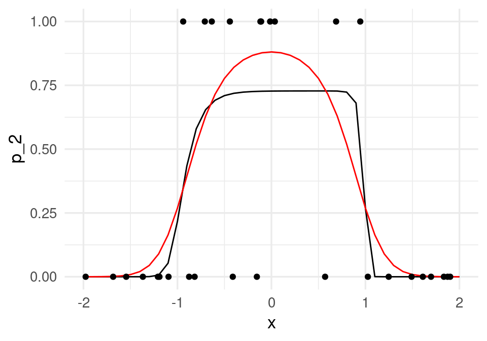
Los coeficientes estimados, que en este caso muchas veces se llaman pesos, son:
beta |> round(2)[1] -24.82 23.02 -8.44 -6.76 0.98 -14.02 -14.34que parecen ser muy grandes. Igualmente, de la figura vemos que el ajuste no parece ser muy estable (esto se puede confirmar corriendo con distintos conjuntos de entrenamiento). Podemos entonces regularizar ligeramente la devianza para resolver este problema. En primer lugar, definimos la devianza regularizada (ridge), donde penalizamos todos los coeficientes que multiplican a una variable, pero no los intercepts:
perdida_log_fun_r <- function(x, y, lambda){
# esta función es una fábrica de funciones
perdida_reg <- function(beta){
p <- feed_fow(beta, x)
# en esta regularizacion quitamos sesgos, pero puede hacerse también con sesgos.
- 2 * mean(y*log(p) + (1-y)*log(1-p)) + lambda*sum(beta[-c(1,3,5)]^2)
}
perdida_reg
}perdida_r <- perdida_log_fun_r(x_1, g_1, 0.001) # crea función dev
set.seed(5)
salida <- optim(rnorm(7), perdida_r, method = 'BFGS') # inicializar al azar punto inicial
beta <- salida$par
perdida_log(beta)[1] 0.74018p_2 <- feed_fow(beta, x)
dat_2 <- data.frame(x, p_2 = p_2)
ggplot(dat_2, aes(x = x, y = p_2)) + geom_line() +
geom_line(data = dat_p, aes(x = x, y = p), col='red') + ylim(c(0,1)) +
geom_point(data = datos, aes(x = x_1, y = g_1))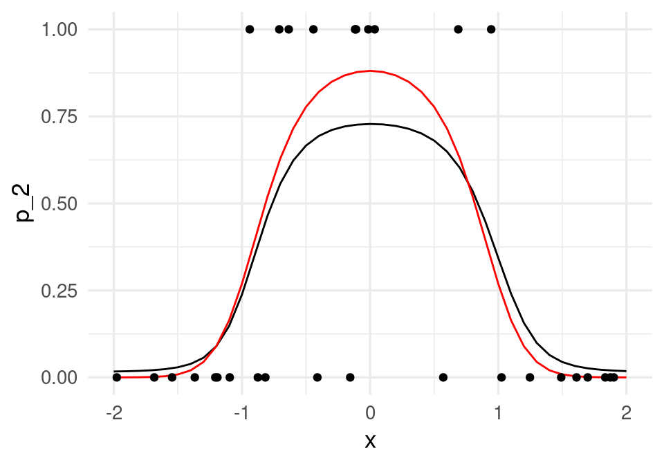
y obtenemos un ajuste mucho más estable. Podemos usar también keras. El modelo, con una capa intermedia de dos unidades, y regularización ridge para los coeficientes, y optimización por descenso en gradiente se define como:
library(keras)
# para reproducibilidad:
tensorflow::tf$random$set_seed(1123)
# construir modelo
ejemplo_mod <- keras_model_sequential()
ejemplo_mod |>
layer_dense(units = 2,
activation = "sigmoid", kernel_regularizer = regularizer_l2(0.0005)) |>
layer_dense(units = 1,
activation = "sigmoid", kernel_regularizer = regularizer_l2(0.0005))x_mat <- as.matrix(datos$x_1, ncol = 1)
y <- datos$g_1
# usamos devianza como medida de error y descenso en gradiente:
ejemplo_mod |> compile(loss = "binary_crossentropy",
optimizer = optimizer_sgd(learning_rate = 3))
# nota: esta learning rate (lr) es demasiado alta para problemas típicos
historia <- ejemplo_mod |>
fit(x_mat, y,
batch_size = nrow(x_mat), epochs = 3000, verbose = 0)Después de verificar convergencia (chécalo examinando la variable historia), graficamos para ver que obtuvimos resultados similares:
p_3 <- predict(ejemplo_mod, as.matrix(x, ncol = 1))
dat_3 <- tibble(x = x, p_2 = p_3)
ggplot(dat_3, aes(x = x, y = p_2)) + geom_line()+
geom_line(data = dat_p, aes(x = x, y = p), col='red') +ylim(c(0,1))+
geom_point(data = datos, aes(x = x_1, y = g_1))Los coeficientes obtenidos están aquí: Nótese: la primera componente de la lista son los coeficientes de la unidad 1 y 2 para \(x\). La segunda son los sesgos u ordenadas al origen, la tercera los coeficientes de la respuesta para las unidades 1 y 2, y el cuarto es el sesgo u ordenada al origen de la unidad de salida:
get_weights(ejemplo_mod)[[1]]
[,1] [,2]
[1,] 4.062385 -4.549506
[[2]]
[1] -4.769000 -4.824979
[[3]]
[,1]
[1,] -5.248475
[2,] -5.199344
[[4]]
[1] 1.075099Ejercicio: compara los coeficientes que obtuviste en este ejemplo con los anteriores.
11.1.0.1 Ejercicio
Un ejemplo más complejo. Utiliza los siguientes datos, y agrega si es necesario variables derivadas \(a_3, a_4\) en la capa oculta.
h <- function(x){
exp(x)/(1 + exp(x))
}
x <- seq(-2,2,0.05)
p <- h(3 + x- 3 * x ^ 2 + 3 * cos(4 * x))
set.seed(280572)
x_2 <- runif(300, -2, 2)
g_2 <- rbinom(300, 1, h(3 + x_2 - 3 * x_2 ^ 2 + 3 * cos(4 * x_2)))
datos <- data.frame(x_2, g_2)
dat_p <- data.frame(x, p)
g <- qplot(x, p, geom = "line", col ="red")
g + geom_jitter(data = datos, aes(x = x_2,y = g_2), col = "black",
position = position_jitter(height = 0.05), alpha = 0.4)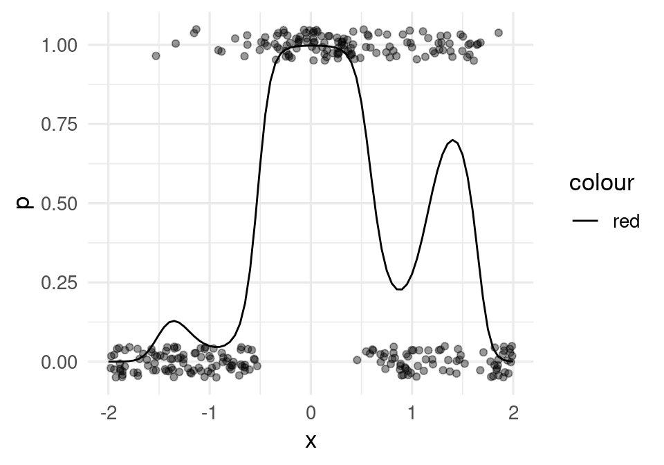
11.2 Interacciones en redes neuronales
Es posible capturar interacciones con redes neuronales. Consideremos el siguiente ejemplo simple:
p <- function(x1, x2){
h(-5 + 10*x1 + 10*x2 - 30*x1*x2)
}
dat <- expand.grid(x1 = seq(0, 1, 0.05), x2 = seq(0, 1, 0.05))
dat <- dat |> mutate(p = p(x1, x2))
ggplot(dat, aes(x=x1, y=x2)) + geom_tile(aes(fill=p))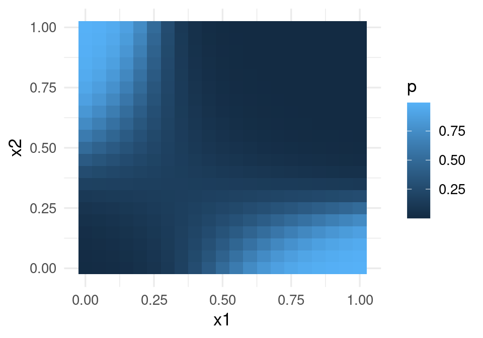
Esta función puede entenderse como un o exclusivo: la probabilidad es alta sólo cuando \(x_1\) y \(x_2\) tienen valores opuestos (\(x_1\) grande pero \(x_2\) chica y viceversa).
No es posible modelar esta función mediante el modelo logístico (sin interacciones). Pero podemos incluir la interacción en el modelo logístico o intentar usar una red neuronal. Primero simulamos unos datos y probamos el modelo logístico con y sin interacciones:
set.seed(322)
n <- 1000
dat_ent <- tibble(x1 = runif(n,0,1), x2 = runif(n, 0, 1)) |>
mutate(p = p(x1, x2)) |>
mutate(y = rbinom(n, 1, p))
mod_1 <- glm(y ~ x1 + x2, data = dat_ent, family = 'binomial')
mod_1
Call: glm(formula = y ~ x1 + x2, family = "binomial", data = dat_ent)
Coefficients:
(Intercept) x1 x2
-0.1061 -1.2042 -1.0402
Degrees of Freedom: 999 Total (i.e. Null); 997 Residual
Null Deviance: 1093
Residual Deviance: 1057 AIC: 1063El resultado del modelo logístico no es bueno:
table(predict(mod_1) > 0.5, dat_ent$y)
0 1
FALSE 764 236Sin embargo, agregando una interacción lo mejoramos considerablemente (examina la devianza y el error de clasificación):
mod_2 <- glm(y ~ x1 + x2 + x1:x2, data = dat_ent, family = 'binomial')
mod_2
Call: glm(formula = y ~ x1 + x2 + x1:x2, family = "binomial", data = dat_ent)
Coefficients:
(Intercept) x1 x2 x1:x2
-5.016 9.763 10.060 -30.100
Degrees of Freedom: 999 Total (i.e. Null); 996 Residual
Null Deviance: 1093
Residual Deviance: 644.3 AIC: 652.3table(predict(mod_2) > 0.5, dat_ent$y)
0 1
FALSE 735 128
TRUE 29 108Observese la gran diferencia de devianza entre los dos modelos (en este caso, el sobreajuste no es un problema).
Ahora consideramos qué red neuronal puede ser apropiada.
reg <- regularizer_l2(0.0001)
mod_inter <- keras_model_sequential()
mod_inter |>
layer_dense(units = 4, kernel_regularizer = reg, activation = "sigmoid",
name = "capa_intermedia", input_shape = c(2)) |>
layer_dense(units = 1, kernel_regularizer = reg, name = "capa_final") |>
layer_activation("sigmoid")mod_inter |> compile(loss = "binary_crossentropy",
optimizer = optimizer_sgd(learning_rate = 0.7))
historia <- mod_inter |>
fit(dat_ent |> select(x1, x2) |> as.matrix(), dat_ent$y,
batch_size = nrow(dat_ent), epochs = 10000, verbose = 0)Verificamos que esta red captura la interacción:
preds <- predict(mod_inter,
dat |> select(x1, x2) |> as.matrix())
dat <- dat |> mutate(p_red = preds)
ggplot(dat, aes(x = x1, y = x2)) +
geom_tile(aes(fill = p_red))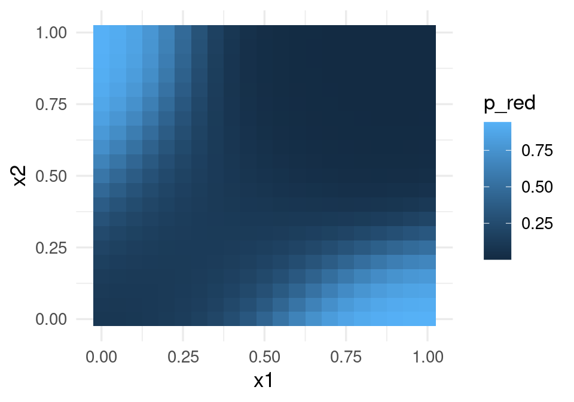
Aunque podemos extraer los cálculos de la red ajustada, vamos a hacer el cálculo de la red a mano. La función feed forward es:
beta <- get_weights(mod_inter)
feed_fow <- function(beta, x){
a <- h(t(beta[[1]]) %*% x + as.matrix(beta[[2]], 2, 1))
p <- h(t(beta[[3]]) %*% a + as.matrix(beta[[4]], 1, 1))
p
}Observación: ¿cómo funciona esta red? Consideremos la capa intermedia (3 unidades) para cuatro casos: \((0,0), (0,1), (1,0), (1,1)\):
mat_entrada <- tibble(x_1 = c(0,0,1,1), x_2 = c(0,1,0,1)) |> as.matrix()
capa_1 <- keras_model(inputs = mod_inter$input,
outputs = get_layer(mod_inter, "capa_intermedia")$output)
predict(capa_1, mat_entrada) |> round(2) [,1] [,2] [,3] [,4]
[1,] 0.04 0.46 0.93 0.00
[2,] 0.00 0.84 0.15 0.21
[3,] 0.86 0.81 1.00 0.23
[4,] 0.06 0.96 0.95 0.97Y los pesos para calcular esta capa son:
beta[1:2] [[1]]
[,1] [,2] [,3] [,4]
[1,] 5.097618 1.630842 4.722350 4.791013
[2,] -4.576377 1.804243 -4.328931 4.660861
[[2]]
[1] -3.2875111 -0.1659214 2.5774283 -6.0066319Los pesos de la última capa son:
beta[3:4][[1]]
[,1]
[1,] 7.328013
[2,] 2.227762
[3,] -7.103219
[4,] -5.655476
[[2]]
[1] 3.090651Ejercicio: interpreta la red en términos de qué unidades están encendidas (valor cercano a 1) o apagadas (valor cercano a 0). ¿Puedes ajustar este modelo con dos tres unidades intermedias? Haz varias pruebas: ¿qué dificultades encuentras?
11.3 Cálculo en redes: feed-forward
Ahora generalizamos lo que vimos arriba para definir la arquitectura básica de redes neuronales y cómo se hacen cálculos en las redes.
A las variables originales les llamamos capa de entrada de la red, y a la variable de salida capa de salida. Puede haber más de una capa intermedia. A estas les llamamos capas ocultas.
Cuando todas las conexiones posibles de cada capa a la siguiente están presente, decimos que la red es completamente conexa.
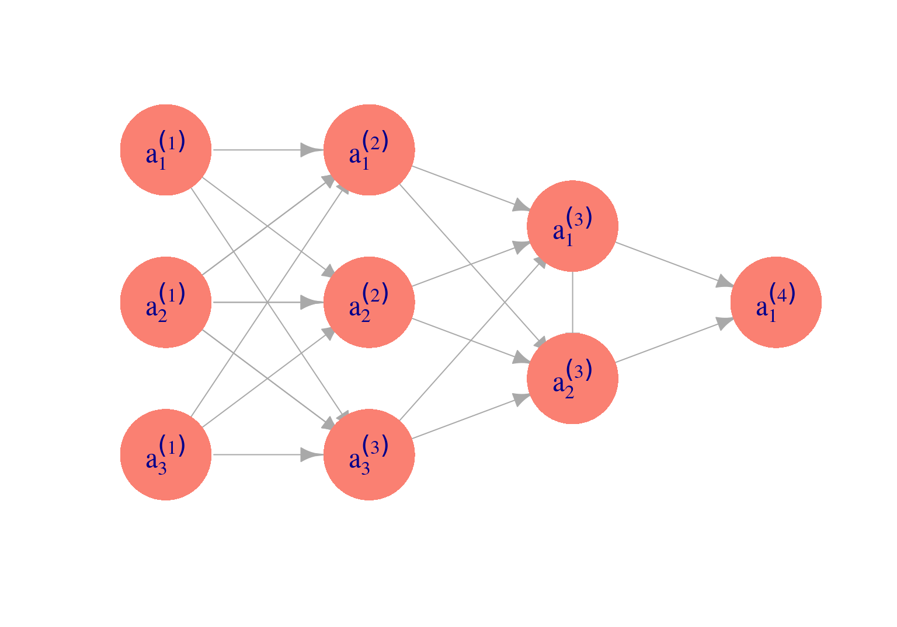
Como vimos en el ejemplo de arriba, para hacer cálculos en la red empezamos con la primera capa, hacemos combinaciones lineales y aplicamos nuestra función no lineal \(h\). Una vez que calculamos la segunda capa, podemos calcular la siguiente de la misma forma: combinaciones lineales y aplicación de \(h\). Y así sucesivamente hasta que llegamos a la capa final.
11.4 Notación
Sea \(L\) el número total de capas. En primer lugar, para un cierto caso de entrada \(x = (x_1,x_2,\ldots, x_p)\), denotamos por:
- \(a^{(l)}_j\) el valor que toma la unidad \(j\) de la capa \(l\), para \(j=0,1,\ldots, n_{l}\), donde \(n_l\) es el número de unidades de la capa \(l\).
- Ponemos \(a^{(l)}_0=1\) para lidiar con los sesgos.
- *En particular, ponemos \(a^{(1)}_j = x_j\), que son los valores de las entradas (primera capa)
- Para clasificación binaria, la última capa solo tiene un elemento, que es \(p_1 = a^{(L)}\). Para un problema de clasificación en \(K>2\) clases, tenemos que la última capa es de tamaño \(K\): \(p_1 = a^{(L)}_1, p_2 = a^{(L)}_2,\ldots, p_K = a^{(L)}_K\)
Adicionalmente, escribimos
\(\theta_{i,k}^{(l)}=\) es el peso de entrada \(a_{k}^{(l-1)}\) de capa \(l-1\) en la entrada \(a_{i}^{(l)}\) de la capa \(l\).
Los sesgos están dados por
\[\theta_{i,0}^{(l)}\]
Ejemplo
En nuestro ejemplo, tenemos que en la capa \(l=3\) hay dos unidades. Así que podemos calcular los valores \(a^{(3)}_1\) y \(a^{(3)}_2\). Están dados por
\[a_1^{(3)} = h(\theta_{1,0}^{(2)} + \theta_{1,1}^{(2)} a_1^{(2)}+ \theta_{1,2}^{(2)}a_2^{(2)}+ \theta_{1,3}^{(2)} a_3^{(2)})\]
\[a_2^{(3)} = h(\theta_{2,0}^{(2)} + \theta_{2,1}^{(2)} a_1^{(2)}+ \theta_{2,2}^{(2)}a_2^{(2)}+ \theta_{2,3}^{(2)} a_3^{(2)})\]
Como se ilustra en la siguiente gráfica:
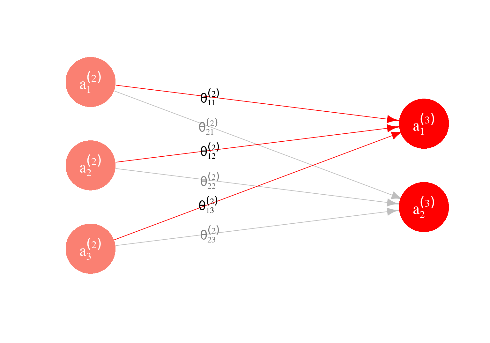
Para visualizar las ordenadas (que también se llaman sesgos en este contexto), ponemos \(a_{0}^{(2)}=1\).
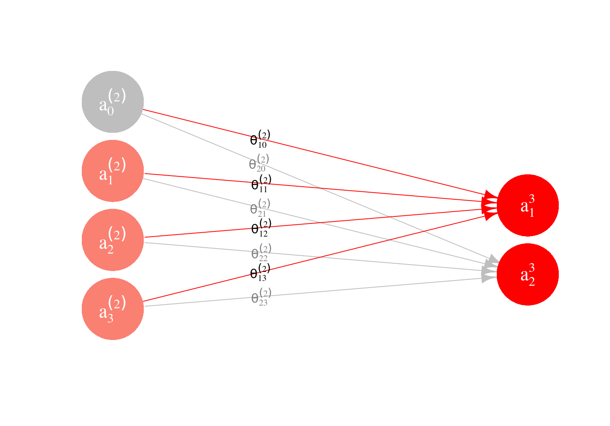
Ejemplo
Consideremos propagar a la capa 3 a partir de la capa 2. Usaremos los siguientes pesos para capa 3 y valores de la capa 2 (en gris están los sesgos):
Que en nuestra notación escribimos como
\[a^{(2)}_0 = 1, a^{(2)}_1 = -2, a^{(2)}_2 = 5, a^{(2)}=3\]
y los pesos son, para la primera unidad:
\[\theta^{(2)}_{1,0} = 3, \,\,\, \theta^{(2)}_{1,1} = 1.5,\,\,\,\theta^{(2)}_{1,2} = -1,\,\,\theta^{(2)}_{1,3} = -0.5 \]
y para la segunda unidad
\[\theta^{(2)}_{2,0} = 1, \,\,\, \theta^{(2)}_{2,1} = 2,\,\,\,\theta^{(2)}_{2,2} = 0.5,\,\, \theta^{(2)}_{2,3} = -0.2\]
Y ahora queremos calcular los valores que toman las unidades de la capa 3, que son \(a^{(3)}_1\) y \(a^{(3)}_2\)$
Para hacer feed forward a la siguiente capa, hacemos entonces
\[a^{(3)}_1 = h(3 + a^{(2)}_1 - a^{(2)}_2 -0.5 a_3^{(2)}),\]
\[a^{(3)}_2 = h(1 + 2a^{(2)}_1 + 0.5a^{(2)}_2 - 0.2 a_3^{(2)}),\]
Ponemos los pesos y valores de la capa 2 (incluyendo sesgo):
a_2 <- c(1, -2, 5, 3) # ponemos un 1 al principio para el sesgo
theta_2_1 = c(3, 1.5, -1.0, -0.5)
theta_2_2 = c(1, 2, 0.5, -0.2)y calculamos
a_3 <- c(1, h(sum(theta_2_1*a_2)),h(sum(theta_2_2*a_2))) # ponemos un 1 al principio
a_3[1] 1.000000000 0.001501182 0.249739894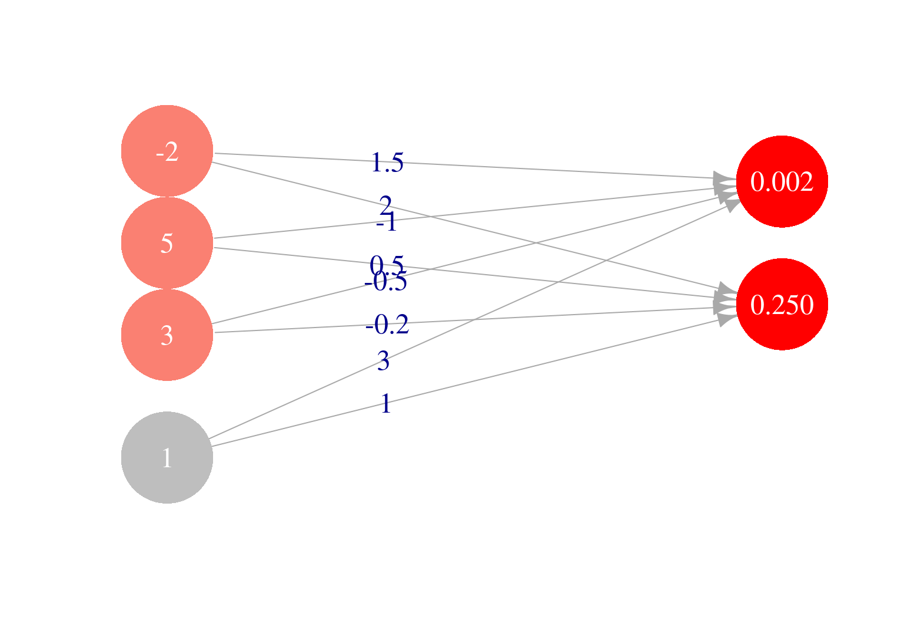
11.5 Algoritmo de Feed forward
Para calcular los valores de salida de una red a partir de pesos y datos de entrada, usamos el algoritmo feed-forward, calculando capa por capa.
Para la primera capa, escribimos las variables de entrada:
\[a^{(1)}_j = x_j, j=1\ldots,n_1\]
Para la primera capa oculta, o la segunda capa
\[a^{(2)}_j = h\left( \theta_{j,0}^{(1)}+ \sum_{k=1}^{n_1} \theta_{j,k}^{(1)} a^{(1)}_k \right), j=1\ldots,n_2\]
para la \(l\)-ésima capa:
\[a^{(l)}_j = h\left( \theta_{j,0}^{(l-1)}+ \sum_{k=1}^{n_{l-1}} \theta_{j,k}^{(l-1)} a^{(l-1)}_k \right), j=1\ldots,n_{l}\]
y así sucesivamente. Para la capa final o capa de salida (para problema binario), suponiendo que tenemos \(L\) capas (\(L-2\) capas ocultas):
\[p_1 = h\left( \theta_{1,0}^{(L-1)}+ \sum_{k=1}^{n_{L-1}} \theta_{1,k}^{(L-1)} a^{(L-1)}_k \right).\]
Nótese que entonces:
Cada capa se caracteriza por el conjunto de parámetros \(\Theta^{(l)}\), que es una matriz de \(n_l\times n_{l-1}\).
La red completa entonces se caracteriza por:
- La estructura elegida (número de capas ocultas y número de nodos en cada capa oculta).
- Las matrices de pesos en cada capa \(\Theta^{(1)},\Theta^{(2)},\ldots, \Theta^{(L-1)}\)
Adicionalmente, escribimos en forma vectorial:
\[a^{(l)} = (a^{(l)}_0, a^{(l)}_1, a^{(l)}_2, \ldots, a^{(l)}_{n_l})^t\]
Para calcular la salidas, igual que hicimos, antes, propagaremos hacia adelante los valores de las variables de entrada usando los pesos. Agregando entradas adicionales en cada capa \(a_0^{(l)}\), \(l=1,2,\ldots, L-1\), donde \(a_0^{l}=1\), y agregando a \(\Theta^{(l)}\) una columna con las ordenadas al origen (o sesgos) podemos escribir:
- Capa 1 (vector de entradas)
\[ a^{(1)} = x\]
- Capa 2
\[ a^{(2)} = h(\Theta^{(1)}a^{(1)})\]
- Capa \(l\) (oculta)
\[ a^{(l)} = h(\Theta^{(l-1)}a^{(l-1)})\]
- Capa de salida:
En un problema de clasificación binaria, la capa de salida se calcula como en regresión logística:
\[a^{(L)}= p = h(\Theta^{(L-1)}a^{(L-1)})\]
donde \(h\) se aplica componente a componente sobre los vectores correspondientes. Nótese que feed-foward consiste principalmente de multiplicaciones de matrices con algunas aplicaciones de \(h\)
Para un problema de regresión, la última capa se calcula como en regresión lineal:
\[a^{(L)} = p = \Theta^{(L-1)}a^{(L-1)}\]
11.6 Algoritmo de Backpropagation: cálculo del gradiente (clasificación binaria)
Más adelante, para ajustar los pesos y sesgos de las redes (valores \(\theta\)), utilizaremos descenso en gradiente y otros algoritmos derivados del gradiente (descenso estocástico). En esta parte entonces veremos cómo calcular estos gradientes con el algoritmo de back-propagation, que es una aplicación de la regla de la cadena para derivar. Back-propagation resulta en una fórmula recursiva donde propagamos errores de la red como gradientes desde el final de red (capa de salida) hasta el principio, capa por capa.
Consideramos el problema de clasificación binaria
Recordamos la devianza (con regularización ridge) es
\[D = -\frac{2}{n}\sum_{i=1}^n y_i\log(p_1(x_i)) +(1-y_i)\log(1-p_1(x_i)) + \lambda \sum_{l=2}^{L} \sum_{k=1}^{n_{l-1}} \sum_{j=1}^{n_l}(\theta_{j,k}^{(l)})^2.\]
Queremos entonces calcular las derivadas de la devianza con respecto a cada parámetro \(\theta_{j,k}^{(l)}\). Esto nos proporciona el gradiente para nuestro algoritmo de descenso.
Consideramos aquí el problema de clasificación binaria con devianza como función de pérdida, y sin regularización. La parte de la parcial que corresponde al término de regularización es fácil de agregar al final.
Recordamos también nuestra notación para la función logística (o sigmoide):
\[h(z)=\frac{1}{1+e^{-z}}.\]
Necesitaremos su derivada, que está dada por (cálculala):
\[h'(z) = h(z)(1-h(z))\]
Cálculo para un caso de entrenamiento
Como hicimos en regresión logística, primero simplificamos el problema y consideramos calcular las parciales para un solo caso de entrenamiento \((x,y)\):
\[ D= -\left ( y\log (p_1(x)) + (1-y)\log (1-p_1(x))\right) . \]
Después sumaremos sobre toda la muestra de entrenamiento. Entonces queremos calcular
\[\frac{\partial D}{\partial \theta_{j,k}^{(l)}}\]
Y escribiremos, con la notación de arriba,
\[a^{(l+1)}_j = h(z^{(l+1)}_j)\]
donde
\[z^{(l+1)} = \Theta^{(l)} a^{(l)},\]
que coordenada a coordenada se escribe como
\[z^{(l+1)}_j = \sum_{k=0}^{n_{l}} \theta_{j,k}^{(l)} a^{(l)}_k\]
Paso 1: Derivar respecto a capa \(l+1\)
Como los valores de cada capa determinan los valores de salida y la devianza, podemos escribir (recordemos que \(a_0^{(l)}=1\) es constante):
\[D=D(a_0^{(l+1)},a_1^{(l+1)},a_2^{(l+1)},\ldots, a_{n_{l+1}}^{(l+1)})=D(a_1^{(l+1)},a_2^{(l+1)},\ldots, a_{n_{l+1}}^{(l+1)})\]
Así que por la regla de la cadena para varias variables:
\[\frac{\partial D}{\partial \theta_{j,k}^{(l)}} = \sum_{t=1}^{n_{l}} \frac{\partial D}{\partial a_t^{(l+1)}}\frac{\partial a_t^{(l+1)}} {\partial \theta_{j,k}^{(l)} }\]
Pero si vemos dónde aparece \(\theta_{j,k}^{(l)}\) en la gráfica de la red:
\[ \cdots a^{(l)}_k \xrightarrow{\theta_{j,k}^{(l)}} a^{(l+1)}_j \cdots \rightarrow D\]
Entonces podemos concluir que \(\frac{\partial a_t^{(l+1)}}{\partial \theta_{j,k}^{(l)}} =0\) cuando \(t\neq j\) (pues no dependen de \(\theta_{j,k}^{(l)}\)),
y entonces, para toda \(j=1,2,\ldots, n_{l+1}, k=0,1,\ldots, n_{l}\) \[\begin{equation} \frac{\partial D}{\partial \theta_{j,k}^{(l)}} = \frac{\partial D}{\partial a_j^{(l+1)}}\frac{\partial a_j^{(l+1)}}{\partial \theta_{j,k}^{(l)} } . (\#eq:parcial) \end{equation}\]
Adicionalmente, como
\[a_j^{(l+1)} = h(z_j^{(l+1)}) = h\left (\sum_{k=0}^{n_{l}} \theta_{j,k}^{(l)} a^{(l)}_k \right )\]
y las \(a_k^{(l)}\) no dependen de \(\theta_{j,k}^{(l)}\), tenemos por la regla de la cadena que \[\begin{equation} \frac{\partial a_j^{(l+1)}}{\partial \theta_{j,k}^{(l)} } = h'(z_j^{(l+1)})a_k^{(l)}. \end{equation}\]
Esta última expresión podemos calcularla pues sólo requiere la derivada de \(h\) y los valores otenidos en el paso de feed-forward.
Paso 2: Obtener fórmula recursiva
Así que sólo nos queda calcular las parciales (\(j = 1,\ldots, n_l\))
\[\frac{\partial D}{\partial a_j^{(l)}}\]
Para obtener una fórmula recursiva para esta cantidad (hacia atrás), aplicamos otra vez regla de la cadena, pero con respecto a la capa \(l\) (ojo: queremos obtener una fórmula recursiva!):
$$= {s=1}^{n{l+1}}
,$$
que se puede entender a partir de este diagrama:
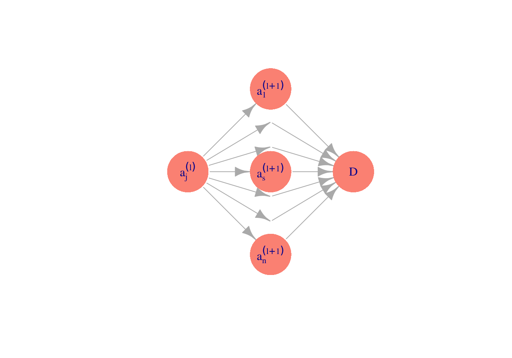
Nótese que la suma empieza en \(s=1\), no en \(s=0\), pues \(a_0^{(l+1)}\) no depende de \(a_k^{(l)}\).
En este caso los elementos de la suma no se anulan necesariamente. Primero consideramos la derivada de:
\[\frac{\partial a_s^{(l+1)}}{\partial a_j^{(l)}}=h'(z_s^{(l+1)})\theta_{s,j}^{(l)},\]
de modo que
\[\frac{\partial D}{\partial a_j^{(l)}}= \sum_{s=1}^{n_l} \frac{\partial D}{\partial a_s^{(l+1)}} h'(z_s^{(l+1)})\theta_{s,j}^{(l)}.\]
Nótese que esto nos da una fórmula recursiva para las parciales que nos falta calcular (de \(D\) con respecto a \(a\)), pues las otras cantidades las conocemos por backpropagation.
Paso 3: Simplificación de la recursión
\[\begin{equation} \delta_s^{ (l+1)}=\frac{\partial D}{\partial a_s^{(l+1)}} h'(z_s^{(l+1)}) (\#eq:delta-def-a) \end{equation}\]
de manera que la ecuación recursiva es
\[\begin{equation} \frac{\partial D}{\partial a_j^{(l)}} = \sum_{s=1}^{n_{l+1}} \delta_s^{(l+1)}\theta_{s,j}^{(l)}. (\#eq:delta-def) \end{equation}\]
Tenemos que si \(l=2,\ldots,L-1\), entonces podemos escribir (usando @ref(eq:delta-def)) como fórmula recursiva:
\[\begin{equation} \delta_j^{(l)} = \left (\sum_{s=1}^{n_l} \delta_s^{(l+1)} \theta_{s,j}^{(l)}\right ) h'(z_j^{(l)}), (\#eq:delta-recursion) \end{equation}\] para \(j=1,2,\ldots, n_{l}\).
Paso 4: Condiciones inciales
Para la última capa, tenemos que (demostrar!)
\[\delta_1^{(L)}=p - y.\]
Paso 5: Cálculo de parciales
Finalmente, usando @ref(eq:parcial) y @ref(eq:delta-def-a) , obtenemos
\[\frac{\partial D}{\partial \theta_{j,k}^{(l)}} = \delta_j^{(l+1)}a_k^{(l)},\]
y con esto ya podemos hacer backpropagation para calcular el gradiente sobre cada caso de entrenamiento, y solo resta acumular para obtener el gradiente sobre la muestra de entrenamiento.
Muchas veces es útil escribir una versión vectorizada (importante para implementar):
Paso 6: Versión matricial
Ahora podemos escribir estas ecuaciones en forma vectorial. En primer lugar,
\[\delta^{(L)}=p-y.\]
Y además se puede ver de la ecuación @ref(eq:delta-recursion) que (\(\Theta_{*}^{(l+1)}\) denota la matriz de pesos sin la columna correspondiente al sesgo):
\[\begin{equation} \delta^{(l)}=\left( \Theta_{*}^{(l)} \right)^t\delta^{(l+1)} \circ h'(z^{(l)}) (\#eq:delta-recursion-mat) \end{equation}\]
donde \(\circ\) denota el producto componente a componente.
Ahora todo ya está calculado. Lo interesante es que las \(\delta^{(l)}\) se calculan de manera recursiva.
Algoritmo de backpropagation
#Backpropagation
Para problema de clasificación con regularización $ $. Para \(i=1,\ldots, N,\) tomamos el dato de entrenamiento \((x^{(i)}, y^{(i)})\) y hacemos:
- Ponemos \(a^{(1)}=x^{(i)}\) (vector de entradas, incluyendo 1).
- Calculamos \(a^{(2)},a^{(3)},\ldots, a^{(L)}\) usando feed forward para la entrada \(x^{(i)}.\)
- Calculamos \(\delta^{(L)}=a^{(L)}-y^{(i)}\), y luego \(\delta^{(L-1)},\ldots, \delta^{(2)}\) según la recursión @ref(eq:delta-recursion).
- Acumulamos \(\Delta_{j,k}^{(l)}=\Delta_{j,k}^{(l)} + \delta_j^{(l+1)}a_k^{(l)}\).
- Finalmente, ponemos, si \(k\neq 0\),
\[D_{j,k}^{(l)} = \frac{2}{N}\Delta_{j,k}^{(l)} + 2\lambda\theta_{j,k}^{(l)}\]
y si \(k=0\),
\[D_{j,k}^{(l)} = \frac{2}{N}\Delta_{j,k}^{(l)} .\]
Entonces:
\[D_{j,k}^{(l)} =\frac{\partial D}{\partial \theta_{j,k}^{(l)}}.\]
Nótese que back-propagation consiste principalmente de mutliplicaciones de matrices con algunas aplicaciones de \(h\) y acumulaciones, igual que feed-forward.
11.7 Ajuste de parámetros (introducción)
Consideramos la versión con regularización ridge (también llamada L2) de la devianza de entrenamiento como nuestro función objetivo:
Para un problema de clasificación binaria con \(y_i=0\) o \(y_i=1\), ajustamos los pesos \(\Theta^{(1)},\Theta^{(2)},\ldots, \Theta^{(L)}\) de la red minimizando la devianza (penalizada) sobre la muestra de entrenamiento:
\[D = -\frac{2}{n}\sum_{i=1}^n y_i\log(p_1(x_i)) +(1-y_i)\log(1-p_1(x_i)) + \lambda \sum_{l=2}^{L} \sum_{k=1}^{n_{l-1}} \sum_{j=1}^{n_l}(\theta_{j,k}^{(l)})^2.\]
Este problema en general no es convexo y puede tener múltiples mínimos.
Veremos el proceso de ajuste, selección de arquitectura, etc. más adelante. Por el momento hacemos unas observaciones acerca de este problema de minimización:
Hay varios algoritmos para minimizar esta devianza, algunos avanzados incluyendo información de segundo orden (como Newton), pero actualmente las técnicas más populares, para redes grandes, están derivadas de descenso en gradiente. Más específicamente, una variación, que es descenso estocástico.
Que el algoritmo depende principalmente de multiplicaciones de matrices y acumulaciones implica que puede escalarse de diversas maneras. Una es paralelizando sobre la muestra de entrenamiento (y calcular acumulados al final), pero también se pueden paralelizar las multiplicaciones de matrices (para lo cual los GPUs se prestan muy bien).
Para redes neuronales, el gradiente se calcula con un algoritmo que se llama back-propagation, que es una aplicación de la regla de la cadena para propagar errores desde la capa de salida a lo largo de todas las capas para ajustar los pesos y sesgos.
En estos problemas no buscamos el mínimo global, sino un mínimo local de buen desempeño. Puede haber múltiples mínimos, puntos silla, regiones relativamente planas, precipicios (curvatura alta). Nótese que la simetría implica que podemos obtener la misma red cambiando pesos entre neuronas y las conexiones correspondientes. Esto implica que necesariamente hay varios mínimos.
Todo esto dificulta el entrenamiento de redes neuronales grandes. Para redes grandes, ni siquiera esperamos a alcanzar un mínimo local, sino que nos a veces detenemos prematuramente cuando obtenemos el mejor desempeño posible.
Para este problema, no tiene sentido comenzar las iteraciones con todos los pesos igual a cero, pues las unidades de la red son simétricas: no hay nada que distinga una de otra si todos los pesos son iguales. Esto quiere decir que si iteramos, todas las neuronas van a aprender lo mismo.
Es importante no comenzar valores de los pesos grandes, pues las funciones logísticas pueden quedar en regiones planas donde la minimización es lenta, o podemos tener gradientes demasiado grandes y produzcan inestabilidad en el cálculo del gradiente.
El ajuste de la tasa de aprendizaje es más delicado que para problemas convexos. Generalmente lo tratamos con un hiperparámetro más que hay que afinar. Tasas demasiado grandes pueden llevarnos a mínimos locales relativamente malos.
Generalmente los pesos se inicializan al azar con variables independientes gaussianas o uniformes centradas en cero, y con varianza chica (por ejemplo \(U(-0.5,0.5)\)). Una recomendación es usar \(U(-1/\sqrt{m}, 1/\sqrt{m})\) donde \(m\) es el número de entradas. En general, hay que experimentar con este parámetro.
El proceso para ajustar una red es entonces:
- Definir número de capas ocultas, número de neuronas por cada capa, y un valor del parámetro de regularización. Estandarizar las entradas.
- Seleccionar parámetros al azar para \(\Theta^{(2)},\Theta^{(3)},\ldots, \Theta^{(L)}\). Se toman, por ejemplo, normales con media 0 y varianza chica.
- Correr un algoritmo de minimización de la devianza mostrada arriba. Es necesario experimentar con los parámetros del algoritmo de minimización.
- Verificar convergencia del algoritmo a un mínimo local (o el algoritmo no está mejorando).
- Predecir usando el modelo ajustado.
Finalmente, podemos probar distintas arquitecturas y valores del parámetros de regularización, para afinar estos parámetros según validación cruzada o una muestra de validación.
Ejemplo
Consideramos una arquitectura de dos capas para el problema de diabetes
Escalamos y preparamos los datos:
diabetes_ent <- MASS::Pima.tr
diabetes_pr <- MASS::Pima.te
x_ent <- diabetes_ent |> select(-type) |> as.matrix()
x_ent_s <- scale(x_ent)
x_valid <- diabetes_pr |> select(-type) |> as.matrix()
x_valid_s <- x_valid |>
scale(center = attr(x_ent_s, 'scaled:center'),
scale = attr(x_ent_s, 'scaled:scale'))
y_ent <- as.numeric(diabetes_ent$type == 'Yes')
y_valid <- as.numeric(diabetes_pr$type == 'Yes')Para definir la arquitectura de dos capas con:
- 10 unidades en cada capa
- función de activación sigmoide,
- regularización L2 (ridge),
- salida logística (\(p_1\)), escribimos:
modelo_tc <- keras_model_sequential()
# no es necesario asignar a nuevo objeto, modelo_tc es modificado al agregar capas
modelo_tc |>
layer_dense(units = 10, activation = 'sigmoid',
kernel_regularizer = regularizer_l2(l = 1e-3),
kernel_initializer = initializer_random_uniform(minval = -0.5, maxval = 0.5),
input_shape=7) |>
layer_dense(units = 10, activation = 'sigmoid',
kernel_regularizer = regularizer_l2(l = 1e-3),
kernel_initializer = initializer_random_uniform(minval = -0.5, maxval = 0.5)) |>
layer_dense(units = 1, activation = 'sigmoid',
kernel_regularizer = regularizer_l2(l = 1e-3),
kernel_initializer = initializer_random_uniform(minval = -0.5, maxval = 0.5)
)Ahora difinimos la función de pérdida (devianza es equivalente a entropía cruzada binaria), y pedimos registrar porcentaje de correctos (accuracy) y compilamos en tensorflow:
modelo_tc |> compile(
loss = 'binary_crossentropy',
optimizer = optimizer_sgd(learning_rate = 0.3),
metrics = c('accuracy','binary_crossentropy'))Iteramos con descenso en gradiente y monitoreamos el error de validación. Hacemos 500 iteraciones de descenso en gradiente (épocas=500)
iteraciones <- modelo_tc |> fit(
x_ent_s, y_ent,
#batch size mismo que nrow(x_ent_s) es descenso en grad.
epochs = 500, batch_size = nrow(x_ent_s),
verbose = 0,
validation_data = list(x_valid_s, y_valid)
)score <- modelo_tc |> evaluate(x_valid_s, y_valid)
score loss accuracy binary_crossentropy
0.4686920 0.8012048 0.4361359 preds_proba <- modelo_tc |> predict(x_valid_s)
clasificador_1 <- preds_proba > 0.5
tab_confusion <- table(clasificador_1, y_valid)
tab_confusion y_valid
clasificador_1 0 1
FALSE 196 39
TRUE 27 70prop.table(tab_confusion, 2) y_valid
clasificador_1 0 1
FALSE 0.8789238 0.3577982
TRUE 0.1210762 0.6422018Es importante monitorear las curvas de aprendizaje (entrenamiento y validación) para diagnosticar mejoras:
df_iteraciones <- as_tibble(iteraciones)
ggplot(df_iteraciones, aes(x = epoch, y = value, colour = data, group = data)) +
geom_line() + geom_point() + facet_wrap(~metric, ncol=1, scales = 'free')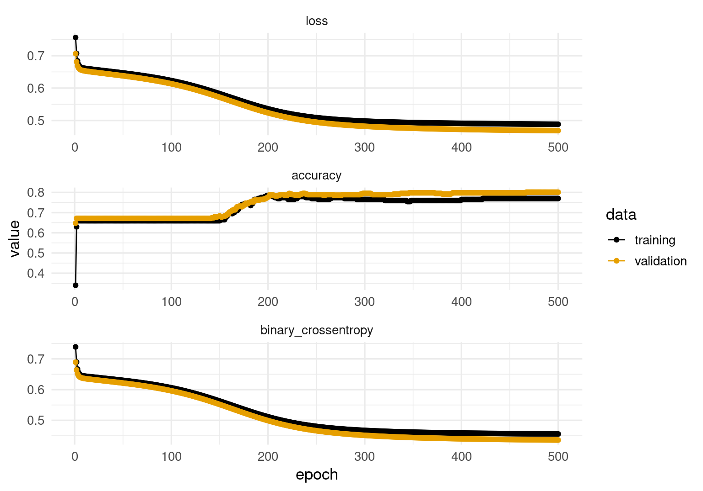
Observación: puedes utilizar Tensorboard, una herramienta para visualizar resultados del entrenamiento de modelos incluída en Tensorflow (que es lo que usa keras para hacer los cálculos):
modelo_tc |> compile(
loss = 'binary_crossentropy',
optimizer = optimizer_sgd(learning_rate = 0.3),
metrics = c('accuracy','binary_crossentropy'))
iteraciones <- modelo_tc |> fit(
x_ent_s, y_ent,
#batch size mismo que nrow(x_ent_s) es descenso en grad.
epochs = 100, batch_size = 50,
verbose = 0,
callbacks = callback_tensorboard("logs/diabetes/run_2"),
validation_data = list(x_valid_s, y_valid)
)y después puedes hacer:
tensorboard("logs/diabetes/")Ejemplo
Ahora hacemos algunos ejemplos para redes totalmente conexas. Usaremos datos de reconocimiento de dígitos (imágenes de 16x16 en grises).
digitos_entrena <- read_csv('../datos/zip-train.csv')
digitos_prueba <- read_csv('../datos/zip-test.csv')
names(digitos_entrena)[1] <- 'digito'
names(digitos_entrena)[2:257] <- paste0('pixel_', 1:256)
names(digitos_prueba)[1] <- 'digito'
names(digitos_prueba)[2:257] <- paste0('pixel_', 1:256)
dim(digitos_entrena)[1] 7291 257table(digitos_entrena$digito)
0 1 2 3 4 5 6 7 8 9
1194 1005 731 658 652 556 664 645 542 644 Ponemos el rango entre [0,2] (pixeles positivos)
x_train <- digitos_entrena |> select(contains('pixel')) |> as.matrix() + 1
x_train <- x_train
x_test <- digitos_prueba |> select(contains('pixel')) |> as.matrix() + 1
x_test <- x_testUsamos codificación dummy:
#dim(x_train) <- c(nrow(x_train), 16, 16, 1)
#dim(x_test) <- c(nrow(x_test), 16, 16, 1)
y_train <- to_categorical(digitos_entrena$digito)
y_test <- to_categorical(digitos_prueba$digito)
head(y_train) [,1] [,2] [,3] [,4] [,5] [,6] [,7] [,8] [,9] [,10]
[1,] 0 0 0 0 0 0 1 0 0 0
[2,] 0 0 0 0 0 1 0 0 0 0
[3,] 0 0 0 0 1 0 0 0 0 0
[4,] 0 0 0 0 0 0 0 1 0 0
[5,] 0 0 0 1 0 0 0 0 0 0
[6,] 0 0 0 0 0 0 1 0 0 0Y definimos un modelo con 2 capas de 200 unidades cada una y regularización L2. Nótese que usamos softmax en la última capa, que es la función (ver parte de regresión multinomial) cuya salida \(k\) está dada por
\[p_k = \frac{exp(z_k)}{\sum_j exp(z_j)}\]
donde \(z=(z_1,\ldots, z_K)\) (estas son las combinaciones lineales de las unidades de la capa anterior).
modelo_tc <- keras_model_sequential()
modelo_tc |>
layer_dense(units = 200, activation = 'sigmoid',
kernel_regularizer = regularizer_l2(l = 1e-6), input_shape=256) |>
layer_dense(units = 200, activation = 'sigmoid',
kernel_regularizer = regularizer_l2(l = 1e-6)) |>
layer_dense(units = 10, activation = 'softmax',
kernel_regularizer = regularizer_l2(l = 1e-6))modelo_tc |> compile(
loss = 'categorical_crossentropy',
optimizer = optimizer_sgd(learning_rate = 0.5, momentum = 0.0, decay = 1e-6),
metrics = c('accuracy' ,'categorical_crossentropy')
)
history <- modelo_tc |> fit(
x_train, y_train,
epochs = 100, batch_size = 256,
verbose = 0,
validation_data = list(x_test, y_test)
)
score <- modelo_tc |> evaluate(x_test, y_test)
score loss accuracy categorical_crossentropy
0.2979129 0.9332337 0.2968644 Podemos también intentar con el ejemplo de spam:
library(readr)
library(tidyr)
library(dplyr)
spam_entrena <- read_csv('../datos/spam-entrena.csv')
spam_prueba <- read_csv('../datos/spam-prueba.csv')
set.seed(293)
x_ent <- spam_entrena |> select(-...1, -spam) |> as.matrix()
x_ent_s <- scale(x_ent)
x_valid <- spam_prueba |> select(-...1, -spam) |> as.matrix()
x_valid_s <- x_valid |>
scale(center = attr(x_ent_s, 'scaled:center'), scale = attr(x_ent_s, 'scaled:scale'))
y_ent <- spam_entrena$spam
y_valid <- spam_prueba$spamEn este caso, intentemos una capa oculta:
modelo_tc <- keras_model_sequential()
modelo_tc |>
layer_dense(units = 200, activation = 'sigmoid',
kernel_regularizer = regularizer_l2(l = 1e-5), input_shape=57) |>
layer_dense(units = 1, activation = 'sigmoid')modelo_tc |> compile(
loss = 'binary_crossentropy',
optimizer = optimizer_sgd(learning_rate = 0.5, momentum = 0.5),
metrics = c('accuracy', 'binary_crossentropy')
)
history <- modelo_tc |> fit(
x_ent_s, y_ent,
epochs = 200, batch_size = 256, verbose = 0,
validation_data = list(x_valid_s, y_valid)
)
score <- modelo_tc |> evaluate(x_valid_s, y_valid)
tab_confusion <- table(predict(modelo_tc, x_valid_s) > 0.4, y_valid)
tab_confusion y_valid
0 1
FALSE 873 37
TRUE 54 57011.8 Activaciones relu
Recientemente se ha descubierto (en gran parte empíricamente) que hay una unidad más conveniente para las activaciones de las unidades, en lugar de la función sigmoide
La función relu es \[\begin{equation} h(z) = \begin{cases} z &\, z>0\\ 0 &\, z<=0 \end{cases} \end{equation}\]
Estas generalmente sustituyen a las unidades sigmoidales en capas ocultas
h_relu <- function(z) ifelse(z > 0, z, 0)
h_logistica <- function(z) 4/(1+exp(-z)) #mult por 4 para comparar más fácilmente
curve(h_relu, -5,5)
curve(h_logistica, add=T, col='red')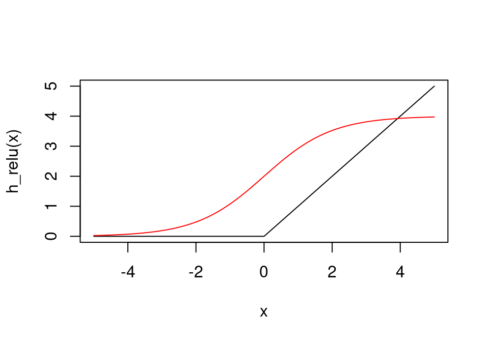
La razón del exito de estas activaciones no está del todo clara, aunque generalmente se cita el hecho de que una unidad saturada (valores de entrada muy positivos o muy negativos) es problemática en optimización, y las unidades tienen menos ese problema pues no se saturan para valores positivos.
Pregunta: ¿cómo cambiaría el algoritmo de feed-forward con estas unidades? ¿el de back-prop?
Ejemplo
Veamos el mismo modelo de dos capas de arriba, pero con activaciones relu:
modelo_tc <- keras_model_sequential()
modelo_tc |>
layer_dense(units = 200, activation = 'relu',
kernel_regularizer = regularizer_l2(l = 1e-3), input_shape=256) |>
layer_dense(units = 200, activation = 'relu',
kernel_regularizer = regularizer_l2(l = 1e-3)) |>
layer_dense(units = 10, activation = 'softmax',
kernel_regularizer = regularizer_l2(l = 1e-3))modelo_tc |> compile(
loss = 'categorical_crossentropy',
optimizer = optimizer_sgd(learning_rate = 0.3, momentum = 0.0, decay = 0),
metrics = c('accuracy', 'categorical_crossentropy')
)
history <- modelo_tc |> fit(
x_train, y_train,
epochs = 200, batch_size = 256,
verbose = 0,
validation_data = list(x_test, y_test)
)
score <- modelo_tc |> evaluate(x_test, y_test)
score loss accuracy categorical_crossentropy
0.2893276 0.9456901 0.2097430 11.9 Dropout para regularización
Un método más nuevo y exitoso para regularizar es el dropout. Consiste en perturbar la red en cada pasada de entrenamiento de minibatch (feed-forward y backprop), eliminando al azar algunas de las unidades de cada capa.
El objeto es que al introducir ruido en el proceso de entrenamiento para evitar sobreajuste, pues en cada paso de la iteración estamos limitando el número de unidades que la red puede usar para ajustar las respuestas. Dropout entonces busca una reducción en el sobreajuste que sea más provechosa que el consecuente aumento en el sesgo.
- En cada iteración (minibatch), seleccionamos con cierta probablidad \(p\) eliminar cada una de las unidades (independientemente en cada capa, y posiblemente con distintas \(p\) en cada capa), es decir, hacemos su salida igual a 0. Hacemos forward-feed y back-propagation poniendo en 0 las unidades eliminadas.
- Escalar pesos: para predecir (prueba), usamos todas las unidades. Si una unidad tiene peso \(\theta\) en una capa después de entrenar, y la probablidad de que esa capa no se haya hecho 0 es \(1-p\), entonces usamos \((1-p)\theta\) como peso para hacer predicciones.
- Si hacemos dropout de la capa de entrada, generalmente se usan valores chicos alrededor de \(0.2\). En capas intermedias se usan generalmente valores más grandes alrededor de \(0.5\).
Podemos hacer dropout de la capa de entrada. En este caso, estamos evitando que el modelo dependa fuertemente de variables individuales. Por ejemplo, en procesamiento de imágenes, no queremos que por sobreajuste algunas predicciones estén ligadas fuertemente a un solo pixel (aún cuando en entrenamiento puede ser que un pixel separe bien los casos que nos interesa clasificar).
Ejemplo: dropout y regularización
Consideremos el problema de separar 8 y 3 del resto de dígitos zip. Queremos comparar el desempeño de una red sin y con dropout (tanto de entradas como de capa oculta) y entender parcialmente cómo se comportan los pesos aprendidos:
set.seed(29123)
entrena_3 <- digitos_entrena |> sample_n(nrow(digitos_entrena)) |>
sample_n(3000)
x_train_3 <- entrena_3 |> select(-digito) |> as.matrix() + 1
y_train_3 <- (entrena_3$digito %in% c(3,8)) |> as.numeric()
set.seed(12)
modelo_sin_reg <- keras_model_sequential()
modelo_sin_reg |>
layer_dense(units = 30, activation = 'relu', input_shape = 256) |>
layer_dense(units = 1, activation = 'sigmoid')
set.seed(12)
modelo_dropout <- keras_model_sequential()
modelo_dropout |>
layer_reshape(input_shape=256, target_shape=256) |>
layer_dropout(0.5) |>
layer_dense(units = 30, activation = 'relu', input_shape = 256, name = "dense_1") |>
layer_dropout(0.5) |>
layer_dense(units = 1, activation = 'sigmoid', name='output')El modelo sin regularización sobreajusta (nótese que el error de validación comienza a crecer considerablemente muy pronto, hay un margen grande entre entrenamiento y validación, y la pérdida de entrenamiento es cercana a 0):
modelo_sin_reg |> compile(loss = 'binary_crossentropy',
optimizer = optimizer_sgd(lr = 0.5),
metrics = c('accuracy')
)Warning in backcompat_fix_rename_lr_to_learning_rate(...): the `lr` argument has
been renamed to `learning_rate`.history_1 <- modelo_sin_reg |> fit(x_train_3/2, y_train_3, verbose=0,
epochs = 800, batch_size = 256, validation_split = 0.2
)
hist_1 <- as.data.frame(history_1)
ggplot(hist_1, aes(x=epoch, y=value, colour=data)) + geom_line() +
facet_wrap(~metric, scales = 'free', ncol=1)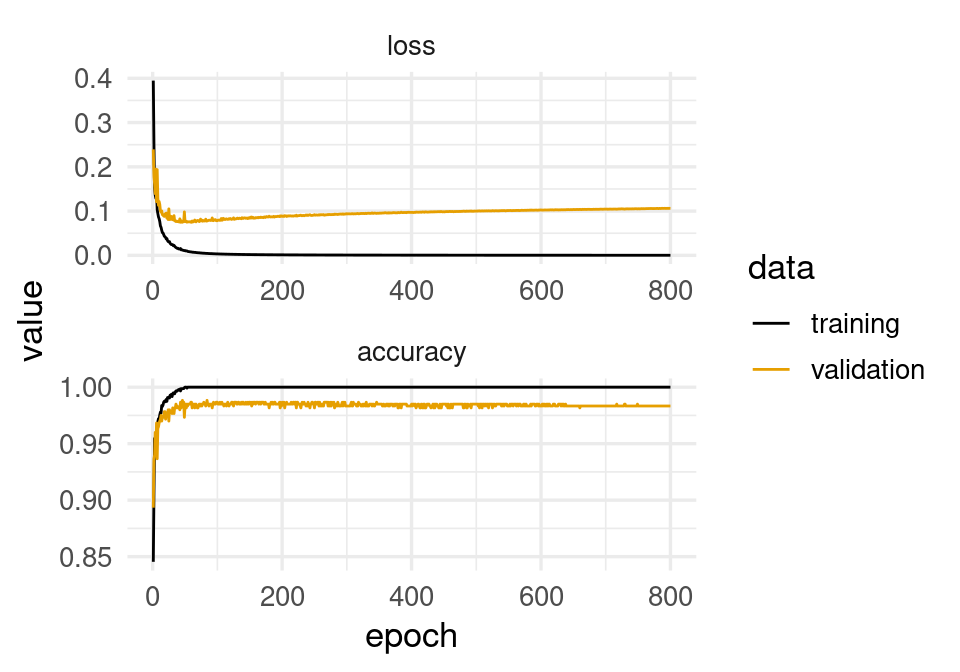
Y parecen ruidosas las unidades que aprendió en la capa oculta (algunas no aprendieron o aprendieron cosas irrelevantes). En la siguiente imagen, cada pixel es un peso. Cada imagen agrupa los pesos de una unidad, y ordenamos los pesos según la variable de entrada (pixel) al que se multiplican.
graf_pesos <- function(pesos, mostrar_facets=FALSE){
pesos_df <- as_tibble(pesos) |>
mutate(pixel = 1:256) |>
mutate(x=(pixel -1) %% 16, y = (pixel-1) %/% 16) |>
gather(unidad, valor, -pixel,-x,-y) |>
mutate(unidad = as.integer(unidad)) |>
mutate(x_grid = (unidad-1) %% 6 + 1, y_grid= (unidad-1) %/% 6 + 1)
marco <- expand.grid(x_grid = 1:6, y_grid=1:5)
pesos_df <- full_join(marco, pesos_df, by=c('x_grid','y_grid'))
pesos_df$valor[is.na(pesos_df$valor)] <- 0
gplot <- ggplot(pesos_df, aes(x=x,y=-y, fill=valor)) + geom_tile() +
facet_grid(x_grid~y_grid) +
scale_fill_gradient2(low = "black", mid='gray80',
high = "white") +
coord_fixed()
if(!mostrar_facets){
gplot <- gplot +
theme(strip.background = element_blank(), strip.text = element_blank())
}
gplot
}
pesos <- get_weights(modelo_sin_reg)[[1]]
colnames(pesos) <- 1:ncol(pesos)
graf_pesos(pesos)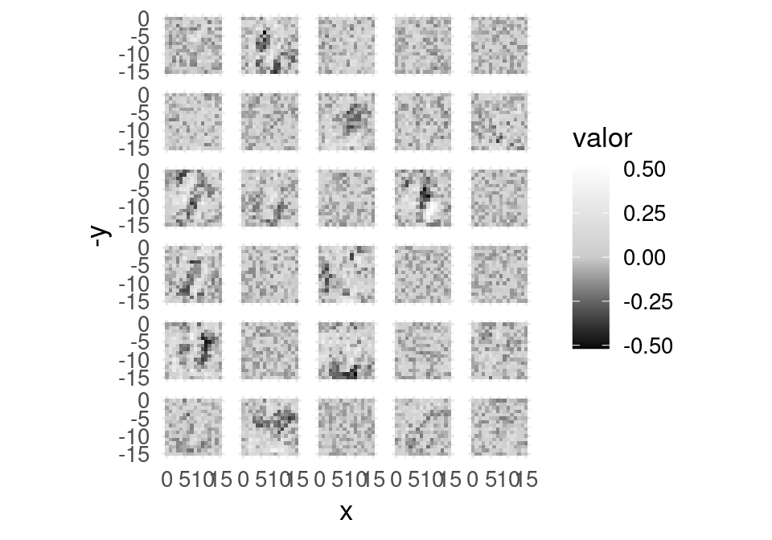
Ahora ajustamos el modelo con dropout:
modelo_dropout |> compile(loss = 'binary_crossentropy',
optimizer = optimizer_sgd(learning_rate = 0.5),
metrics = c('accuracy')
)
history_2 <- modelo_dropout |> fit(x_train_3/2, y_train_3, verbose = 0,
epochs = 800, batch_size = 256, validation_split = 0.2,
callbacks = callback_tensorboard("logs/digits/run_2", write_images=TRUE),
)
hist_2 <- as_tibble(history_2)
ggplot(hist_2, aes(x=epoch, y=value, colour=data)) + geom_line() +
facet_wrap(~metric, scales = 'free')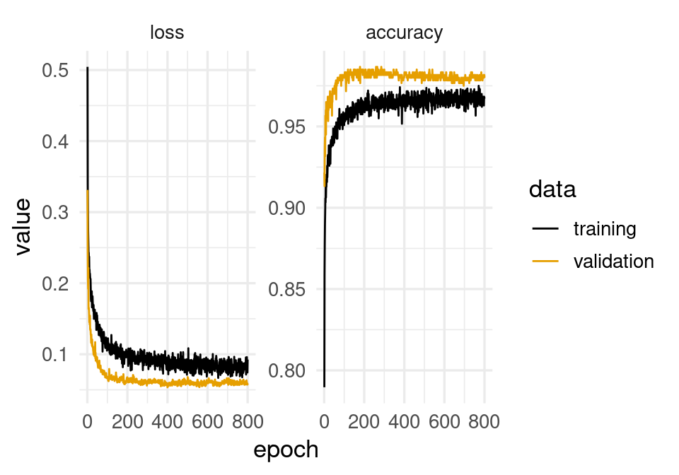
El desempeño es mejor, y parecen ser más útiles los patrones que aprendió la capa oculta:
pesos <- get_weights(modelo_dropout)[[1]]
colnames(pesos) <- 1:ncol(pesos)
graf_pesos(pesos) 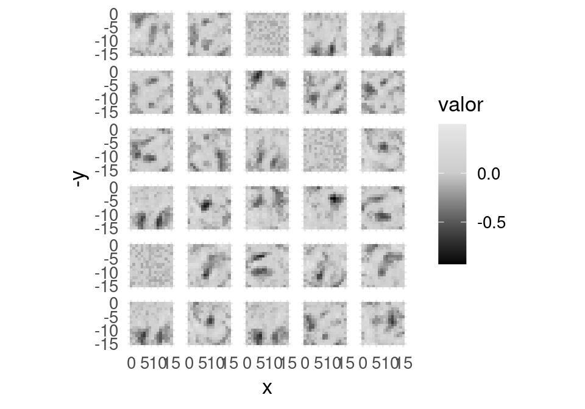
get_weights(modelo_dropout)[[3]] [,1]
[1,] -0.7558547
[2,] 0.4902170
[3,] 0.7409632
[4,] -1.4671373
[5,] 0.2902412
[6,] -1.4140806
[7,] 0.5604442
[8,] 0.7239541
[9,] 0.9784343
[10,] -0.8288803
[11,] -0.6791409
[12,] -0.8196782
[13,] 0.2162549
[14,] -0.9660177
[15,] -1.1058122
[16,] -1.0683811
[17,] 0.9740894
[18,] -1.3882309
[19,] -0.9358422
[20,] 0.5976434
[21,] 0.1453606
[22,] -0.7691740
[23,] -1.0051780
[24,] 0.4785056
[25,] -0.8803148
[26,] 0.5955260
[27,] -0.7486423
[28,] 0.8691846
[29,] -0.6730209
[30,] -0.7201217¿Cuáles de estas unidades tienen peso positivo y negativo en la capa final?
library(patchwork)
pesos_capa_f <- get_weights(modelo_dropout)[[3]]
g_1_pos <- graf_pesos(pesos[, pesos_capa_f > 0]) + labs(subtitle = "Peso positivo")
g_2_neg <- graf_pesos(pesos[, pesos_capa_f < 0]) + labs(subtitle = "Peso negativo")
g_1_pos + g_2_neg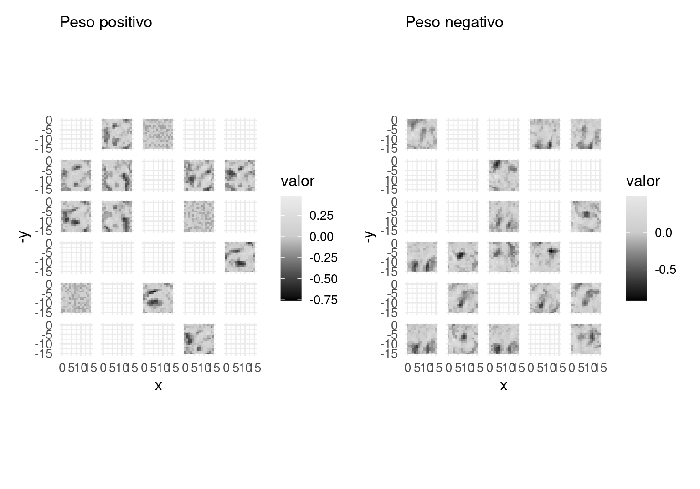
Veamos cómo se activan distintas unidades con diferentes entradas:
indices <- c(10, 28, 3, 16)
entrena_3$digito[indices][1] 9 3 0 2dense_layer <- keras_model(inputs = modelo_dropout$input,
outputs = get_layer(modelo_dropout, 'dense_1')$output)
dense_output <- predict(dense_layer, x_train_3[indices, , drop=FALSE])
dense_t <- t(dense_output)
dense_t [,1] [,2] [,3] [,4]
[1,] 0.0000000 0.000000 1.5595670 0.0000000
[2,] 0.7429497 0.000000 0.7353314 0.0000000
[3,] 0.0000000 4.078984 0.0000000 0.0000000
[4,] 2.4823837 0.000000 0.0000000 0.0000000
[5,] 0.0000000 0.000000 0.0000000 0.0000000
[6,] 2.7821326 0.000000 0.0000000 0.0000000
[7,] 0.4618670 2.331589 0.0000000 0.0000000
[8,] 0.0000000 0.000000 0.0000000 1.1102359
[9,] 0.0000000 0.000000 0.0000000 0.0000000
[10,] 0.0000000 0.000000 4.0879993 2.9297590
[11,] 0.0000000 0.000000 3.2897351 0.0000000
[12,] 0.0000000 0.000000 4.3260498 0.0000000
[13,] 0.0000000 0.000000 0.0000000 0.0000000
[14,] 0.0000000 0.000000 0.0000000 0.0000000
[15,] 0.0000000 0.000000 0.0000000 0.0000000
[16,] 0.0000000 0.000000 0.0000000 1.9319699
[17,] 0.0000000 0.000000 0.0000000 0.0000000
[18,] 2.2966871 0.000000 0.0000000 0.0000000
[19,] 2.1112599 0.000000 0.0000000 0.0000000
[20,] 0.0000000 2.699180 0.0000000 0.0000000
[21,] 0.0000000 0.000000 0.0000000 0.0000000
[22,] 0.0000000 0.000000 0.0000000 0.0000000
[23,] 2.0674853 0.000000 2.1305070 0.0000000
[24,] 0.8965921 2.015435 0.0000000 0.0000000
[25,] 2.3437614 0.000000 0.0000000 0.0000000
[26,] 0.8468671 0.000000 0.0000000 0.8635676
[27,] 0.0000000 0.000000 3.6821470 1.0566226
[28,] 0.0000000 0.000000 0.0000000 0.0000000
[29,] 0.0000000 0.000000 1.8980310 0.0000000
[30,] 0.0000000 0.000000 0.0000000 0.0000000no_legend <- theme(legend.position = "none")
g_1 <- graf_pesos(pesos[, dense_t[ ,1] > 0.5], mostrar_facets = TRUE) + no_legend
g_2 <- graf_pesos(pesos[, dense_t[ ,2] > 0.5], mostrar_facets = TRUE) + no_legend
g_3 <- graf_pesos(pesos[, dense_t[ ,3] > 0.5], mostrar_facets = TRUE) + no_legend
g_4 <- graf_pesos(pesos[, dense_t[ ,4] > 0.5], mostrar_facets = TRUE) + no_legend
(g_1 + g_2) / (g_3 + g_4)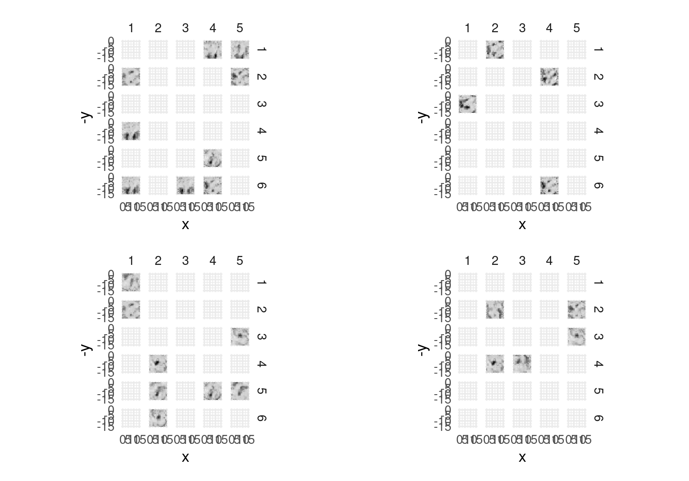
Comentarios adicionales
Algunas maneras en que podemos pensar en la regularización de dropout:
Dropout busca que cada unidad calcule algo importante por sí sola, y dependa menos de otras unidades para hacer algo útil. Algunas unidades y pesos pueden acoplarse fuertemente (y de manera compleja) para hacer las predicciones. Si estas unidades aprendieron ese acoplamento demasiado fuerte para el conjunto de entrenamiento, entonces puede ser nuevos datos, con perturbaciones, puedan producir predicciones malas (mala generalización). Con dropout buscamos que la unidades capturen información útil en general, no necesariamente en acoplamiento fuerte con otras unidades.
Podemos pensar que en cada pasada de minibatch, escogemos una arquitectura diferente, y entrenamos. El resultado final será entonces es un tipo de promedio de todas esas arquitecturas que probamos. Este promedio reduce varianza de las salidas de las unidades.
El paso de escalamiento es importante para el funcionamiento correcto del método. La idea intuitiva es que el peso de una unidad es 0 con probabilidad \(p\) y \(\theta\) con probabilidad \(1-p\). Tomamos el valor esperado como peso para la red completa, que es \(p0+(1-p)\theta\). Ver (Srivastava et al. 2014)
Ejemplo
Experimenta en este ejemplo con distintos valores de dropout, y verifica intuitivamente sus efectos de regularización (ve las curvas de aprendizaje).
modelo_tc <- keras_model_sequential()
modelo_tc |>
layer_reshape(input_shape=256, target_shape=256) |>
layer_dropout(rate=0.2) |>
layer_dense(units = 200, activation = 'relu') |>
layer_dropout(rate = 0.5) |>
layer_dense(units = 200, activation = 'relu') |>
layer_dropout(rate = 0.5) |>
layer_dense(units = 10, activation = 'softmax',
kernel_regularizer = regularizer_l2(l = 1e-4))modelo_tc |> compile(
loss = 'categorical_crossentropy',
optimizer = optimizer_sgd(learning_rate = 0.3,
momentum = 0.5, decay = 0.0001),
metrics = c('accuracy', 'categorical_crossentropy')
)
history <- modelo_tc |> fit(
x_train, y_train,
epochs = 100, batch_size = 256,
validation_data = list(x_test, y_test)
)
score <- modelo_tc |> evaluate(x_test, y_test)
score loss accuracy categorical_crossentropy
0.2347234 0.9506726 0.2305110 11.10 Datos aumentados
Otra manera de regularizar es creando conjuntos de datos más grandes y con más variación de maneras sintéticas y aleatorizadas consistentes con el proceso generador de datos. Por ejemplo:
- En imágenes, podemos hacer incrementar o decrementar el tamaño de la imagen por algun factor aleatorio: los objetos deben seguir siendo reconocibles.
- En algunos casos, hacer algunas rotaciones aleatorias es una buena idea, pues la imágenes que queremos procesar típicamente no están hechas a un ángulo o perspectiva fijo.
- Es posible hacer shearing u otras transformaciones que alteran las proporciones de las imágenes de manera consistente con el proceso generador.
- En imágenes naturales, muchas veces tiene sentido también reflejar la imagen horizontalmente (cambiar izquierda y derecha con una reflexión).
- Es posible también incluir ruido pixel a pixel.
En todos estos casos, entrenamos con un conjunto artificial más grande y variado de imágenes, lo cual puede ayudar en evitar sobreajuste. Veremos ejemplos de esto en la siguiente sección.
Para otro tipo de datos, las transformaciónes deberán ser diferentes. Por ejemplo con sonidos podemos alterar la aleatoriamente amplitud, velocidad e inyectar ruido de distintos tipos. Para tipos de datos tabulares este proceso puede ser más difícil de llevar a cabo, pues identificar transformaciones consistentes con el proceso generador de datos puede no ser tan simple.
Todas estas transformaciones también tienen hiperparámetros con los que podemos experimentar para mejorar desempeño.
11.11 Ajuste de hiperparámetros
Esta sección es un extracto de (Goodfellow, Bengio, y Courville 2016), donde puedes encontrar más detalles.
Dos enfoques: Manual (entender teoría, experiencia) o automático (computo).
Ajuste Manual de Hiperparámetros
- Ajustar la flexibilidad del modelo al problema: debe tener el sesgo apropiado (capacidad de representar patrones), ajustando con regularización de costo y proceso de entrenamiento.
Por ejemplo: más capas tiene más poder de representación (menos sesgo), pero el algoritmo de minimización puede tener dificultades por varianza o por dificultades en minimización, o si la regularización es demasiado grande.
Forma de U del error según capacidad del modelo: en un extremo, baja capacidad (sesgo alto). En otro extremo, hay alta capacidad y brecha grande entre error de entrenamiento y de prueba.
La tasa de aprendizaje es el hiperparámetro más importante. Si es demasiado alta, entonces puede aumentar el error de entrenamiento. Cuando es muy baja, el proceso es lento y se puede atorar.
Si el error en entrenamiento es más alto que tu tasa objetivo (el error que quisieras lograr), hay que bajar sesgo (con parámetros o arquitectura)
Si el error de prueba es más grande que el de entrenamiento, hay dos acciones: prueba = entrena + gap. Hay que hacer tradeoff entre estas dos. En deep learning, generalmente funciona mejor cuando el error de entrenamiento es muy chico, y hay que reducir el gap regularizando: conviene comenzar con una red sobreajustada que tenga error de entrenamiento bajo, y regularizar y controlar complejidad a partir de esta.
Ajuste automático
Grid search cuando hay pocos: todas las combinaciones de parámetros. Prohibitivo si hay demasiados.
Random search es más rápido. Definir distribuciones para los hiperparámetros. Puedes correr repetidamente con distintos rangos. Es eficiente porque no gasta corridas (por ejemplo, cuando un parámetro no tiene mucho efecto).